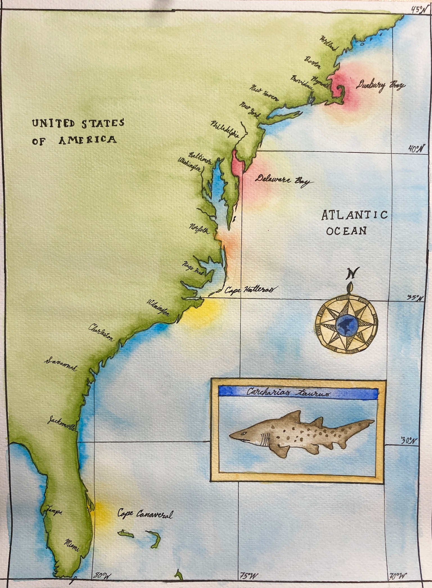
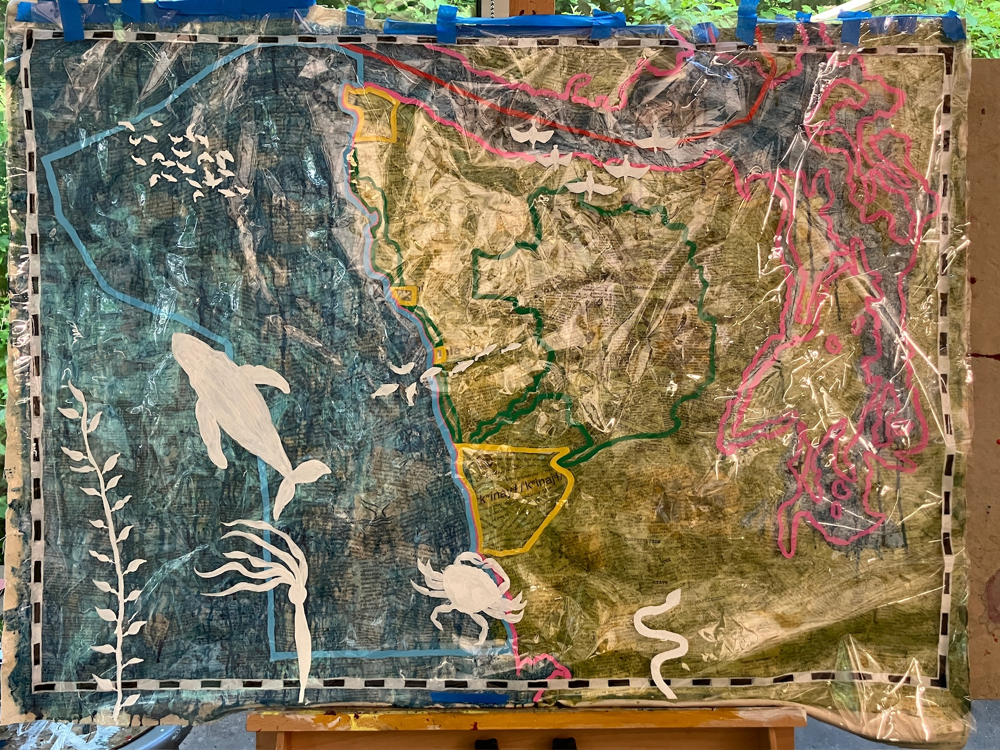
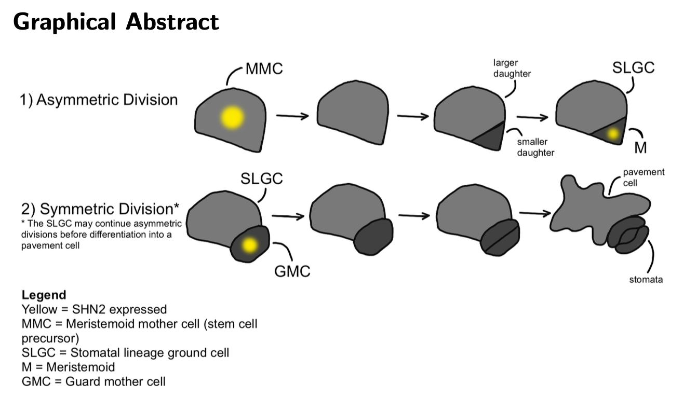
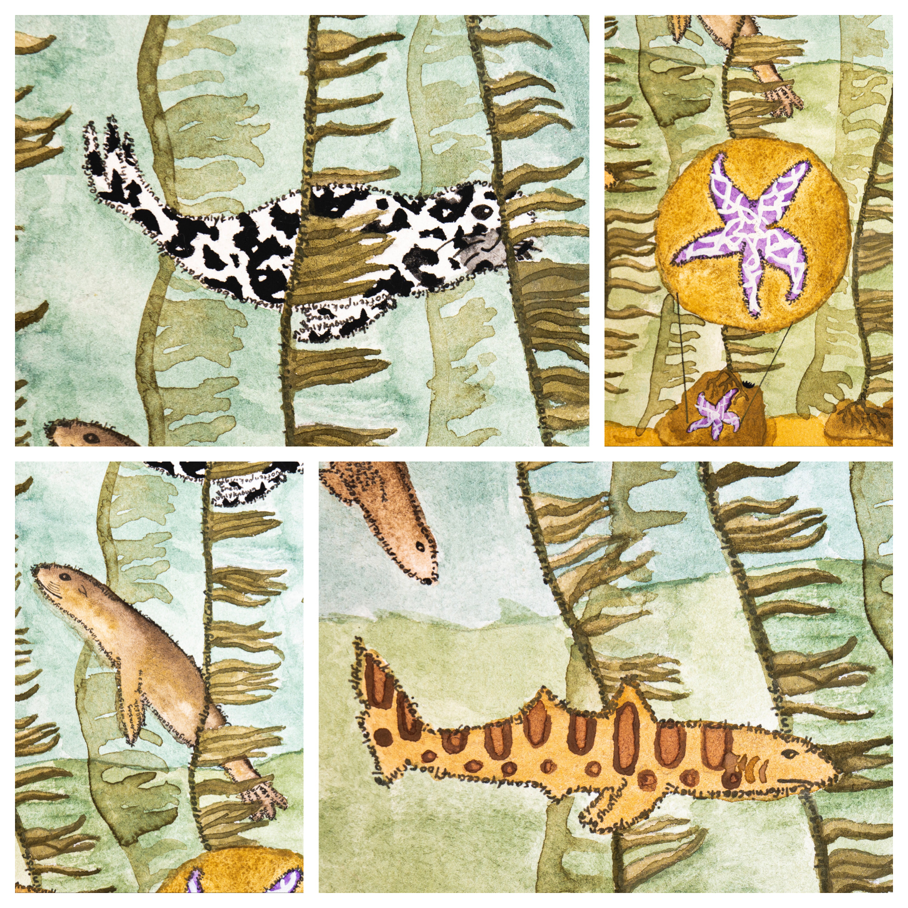
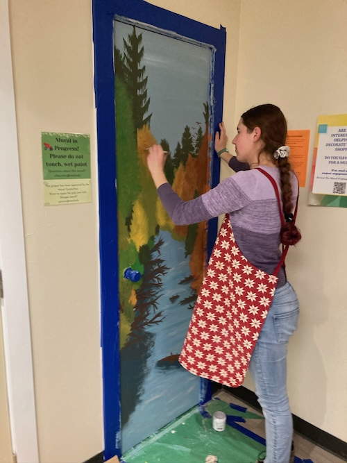
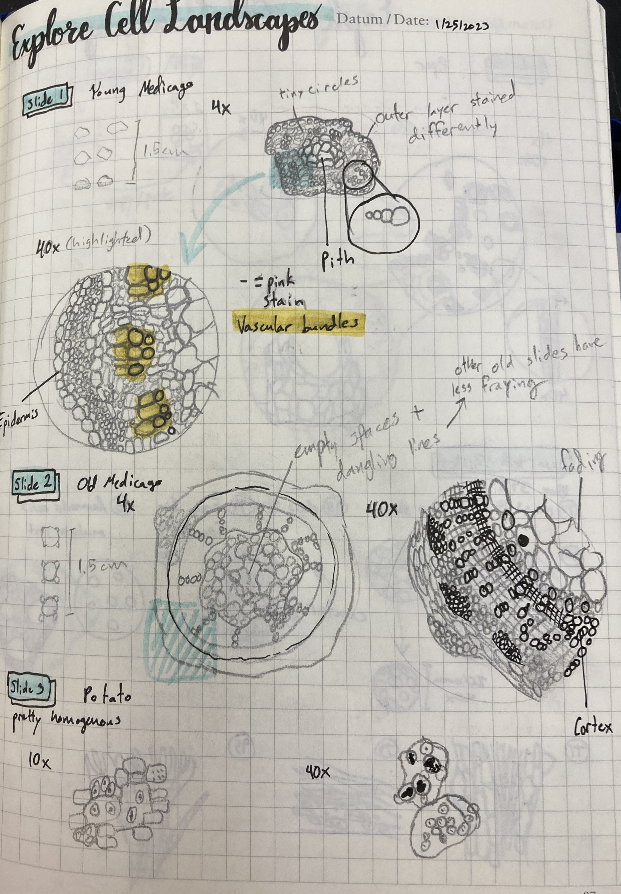
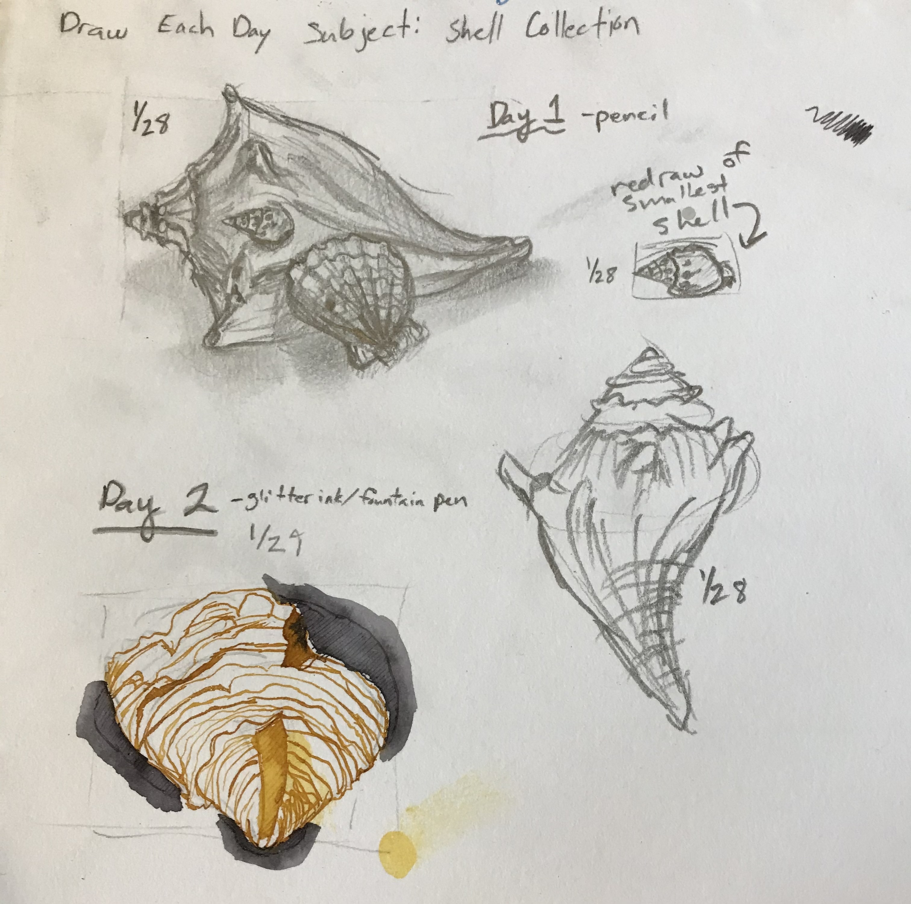
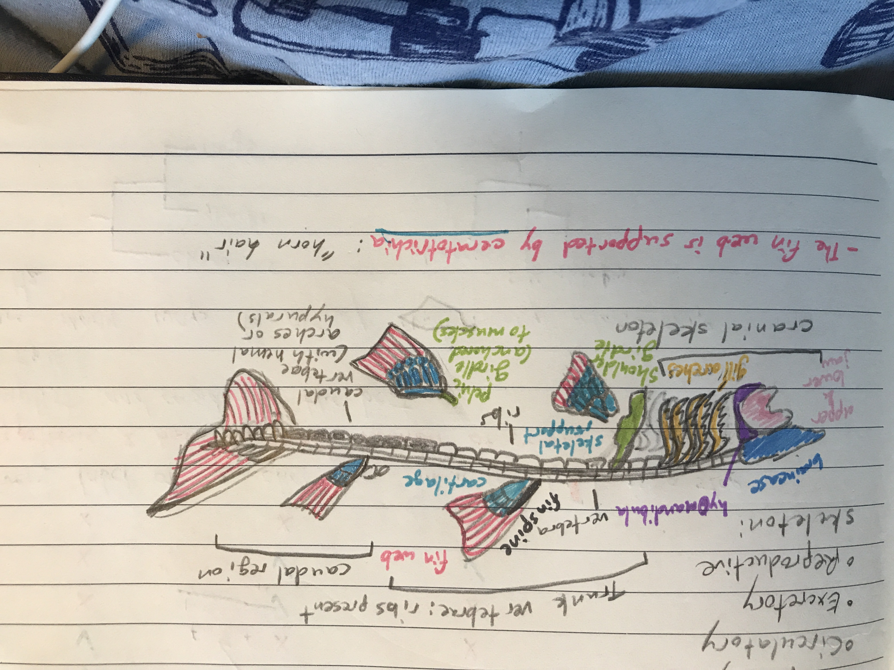
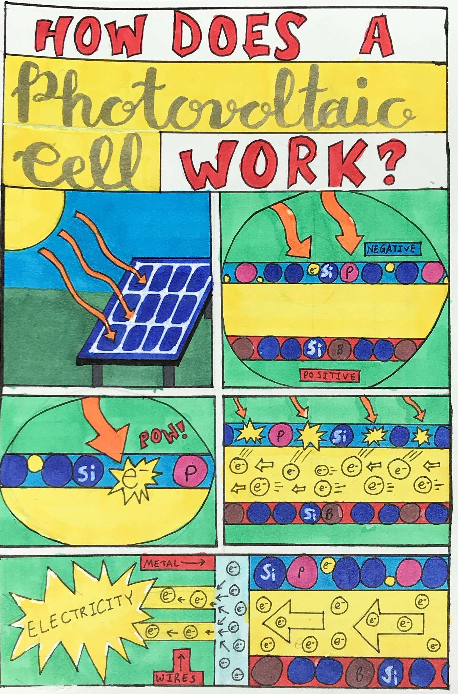

<!DOCTYPE html>
<html>
  <head>
    <title>Ella Crotty</title>
    <link href="style.css" rel="stylesheet">
    <link rel="preconnect" href="https://fonts.googleapis.com">
    <link rel="preconnect" href="https://fonts.gstatic.com" crossorigin>
    <link rel="preconnect" href="https://fonts.googleapis.com">
<link rel="preconnect" href="https://fonts.gstatic.com" crossorigin>
<link href="https://fonts.googleapis.com/css2?family=Crimson+Text:ital,wght@0,400;0,600;0,700;1,400;1,600;1,700&display=swap" rel="stylesheet">
    <meta name="viewport" content="width=device-width, initial-scale=1.0">
  </head>
</html>

<body> <!-- stuff in here is displayed -->

  <!--<a href="#id-of-element-to-link-to">Take me to a different part of the page</a>-->
  <header>
        <h1 style='text-align: center;'>Ella Crotty</h1>

    <nav>
      <container>
        <a margin-left: 0px;' href="./index.html"><strong>Home</strong></a>
        <a margin-left: 0px;' href="./CV.html"><strong>CV</strong></a>
        <a margin-left: 0px;' href="./PublicationsPresentations.html"><strong>Publications & Presentations</strong></a>
        <a margin-left: 0px;' href="./Research.html"><strong>Research</strong></a>
        <a margin-left: 0px;' href="./TeachingOutreach.html"><strong>Teaching & Outreach</strong></a>
        <a margin-left: 0px;' href="./Illustration.html"><strong>Illustration</strong></a>
      </container>
    </nav>
  </header>
  <main>
    <h1>Illustration</h1>
    <p>I enjoy visual art as a hobby, and often make artworks based on my research, or draw my own graphical abstracts. This 
      is a selection of those works.</p>

    <h2>Sand Tiger Shark Migration: Based on Wetherbee Lab Sand Tiger Shark migration research, 2022</h2>
    <p>This painting shows sand tiger shark summer (red) and winter (yellow) aggregation sites. I made it as part of a workshop during my internship,
    where we learned about science communication through art.</p>
    

    <h2>Art 274: Naturecultures Final Project: Based on Hollings/Senior Thesis Research</h2>
    <p>This piece is very difficult to photograph due to the fact that the top two layers are shiny clear plastic. It is based on what I learned
    about Olympic Coast National Marine Sanctuary as an intern and thesis student, displaying the layers of human, animal, plant, and political
    activity in the area. The base layer is a collage of legal documents including constitutions (state and national), treaties defining tribal lands,
    legislation defining Olympic National Park and Olympic National Marine Sanctuary, and relevant portions of the United Nations Convention on the Law of the High 
    Seas. My full artist statement on this piece can be found at the bottom of this page.</p>
    

    <h2>Biology 324: Molecular Plant Development Graphical Abstract</h2>
    <p>This image is a graphical abstract I drew for my final report in Molecular Plant Development. Written abstract: Stomata are an incredibly important 
      component of plant survival, because they allow for the exchange of water and gases between leaves and the environment. The quantity of stomata
      on a plant affects drought tolerance, and stomatal development can be changed by a variety
      of environmental signals and cell signaling networks. Stomata develop through a series of cell
      divisions, starting with meristemoid cells that undergo asymmetric division and ending with a
      symmetric division that produces two guard cells that form the ”lips” of each stoma, which can
      open and close to control water and gas flow. This series of divisions and differentiations is
      controlled by a complex network of genes and cell signals that work together to ensure proper
      stomatal development. In order to better understand the role of SHN2 in these divisions, I
      used fluorescently labeled confocal images of a developing leaf to study the expression of the
      transcription factor SHN2 throughout the stomatal lineage. I also studied stomatal density in loss-
      of-function and gain-of-function shn2 mutants. I found that SHN2 overexpression results in lower
      stomatal density, which is consistent with the literature. I also found that SHN2 expression tends
      to decrease before stomatal lineage cell divisions, suggesting that SHN2 may reduce stomatal
      density by suppressing cell divisions.</p>
    

    <h2>Kelp Forest Watercolor</h2>
    <p>I painted this in high school for a California Coastal Commission Art & Poetry Contest. Each species' outline is made of tiny text giving
    its scientific name and information about it.</p>
    
    

    <h2>Reed College Canyon Mural: Done for Greenboard (Sustainability Club) Storage</h2>
    <p>As the sustainability club leader at Reed College, I got some friends together, got funding from the college, and painted the Reed College Canyon in
    fall on our closet door to liven up a student space.</p>
    
    

    <h2>Lab Notebook Gallery</h2>
    <p>An assortment of illustrations from my lab notebooks and nature studies.</p>
    
    
    
    
    
    

    <h2>Art 274: Naturecultures Final Project Artist Statement: Based on Hollings/Senior Thesis Research</h2>
    <p>This piece is intended to challenge human-imposed boundaries and how they impact the natural world. The work 
      focuses on the theme of crossing boundaries, and engages with the issues of highly migratory species conservation 
      and Indigenous land dispossession. The base map focuses on Olympic Coast National Marine Sanctuary (OCNMS), because 
      my senior thesis, "Utilizing Environmental DNA to Investigate the Effects of Hypoxia on Copepod Abundance," focused 
      on copepods in Olympic Coast National Marine Sanctuary. National Marine Sanctuaries are areas of the ocean, 
      delineated by the United States government, in which many activities that could damage the ocean environment are 
      prohibited, such as moving or injuring historical resources, certain waste discharge from boats, military bombing 
      activities, seabed drilling, and oil, gas, and mineral development (15 CFR Part 922 -- National Marine Sanctuary Program 
      Regulations, 1995). OCNMS protects habitat for rockfish, salmon, halibut, Dungeness crab and other ecologically, 
      commercially, and culturally important species of the Olympic Coast (Office of National Marine Sanctuaries, 2022). 
      However, these species do not recognize the borders of marine sanctuaries or nations. Migratory birds, whales, 
      and commercially important fish such as Pacific whiting, albacore tuna, and mackerel only occur in OCNMS seasonally, 
      and occupy less-protected areas in other times of year (Office of National Marine Sanctuaries, 2022). This work 
      presents imagery of migratory species in OCNMS crossing over human borders, emphasizing the need for cooperation across 
      jurisdictions in conservation efforts.</p>
    <p>I worked with a wide variety of materials for this piece. The materiality of this painting is intended to be interactive 
      and impossible to ignore. The colors of the political borders on the first transparent layer are bright neons, intended 
      to draw the eye against the more muted blue and green of the base map. Additionally, the border of the entire map is drawn
      on the political boundary layer, with a black-and-white striping pattern designed to evoke the design of maps by colonial 
      European nations. The solid, stark white of the silhouettes on the second transparent layer contrasts with those neons and 
      the muted base map, bringing the organisms to the foreground. Finally, the entire painting makes an incredible amount of 
      noise thanks to its barely-secured two mylar sheets. The three layers are connected only by clothespins, so the viewer 
      can remove and rearrange the two transparent layers representing human boundaries and marine organisms at will, interacting 
      with the ecosystem and politics of the Olympic Coast. </p>
    <p>The base layer is made with un-gessoed canvas and collaged paper. The paper used in this layer is all printouts of legislation 
      or informative content that match the political borders shown in the transparent neon layer – for example, The U.N. Convention 
      on the Law of the High Seas for the ocean outside OCNMS, the Oregon Treaty across the Canadian border, the Treaty of Neah Bay, 
      the Treaty of Olympia, and the Constitution of the State of Washington. The collage also includes the logos of the National Park 
      Service and Office of Marine Sanctuaries, the Canadian and American flags, the flag of the state of Washington, the unofficial
      Cascadian flag, the logos of tribal governments who are party to the Olympic NP Memorandum of Understanding, and pieces of my 
      thesis related to OCNMS. I included the Cascadia flag because it explicitly represents a rejection of traditional political 
      borders, formed through bloodshed and codified by treaties. Both the Cascadia flag and this painting get at the idea that the 
      dominant paradigm of political borders is not the only way to understand our cultural or "national" identity in relation to the
      land. The Cascadia bioregion is also called Chinook Illahee in Chinook jargon/Chinook Wawa, a mix of Indigenous and settler 
      languages in the region used for trade beginning in the 1800s (Baretich, 2014b). </p>
    <p>The Olympic Coast National Marine Sanctuary Advisory Council provides advice on the sanctuary’s management. The council is
      comprised of tribal, federal, state, and local government representatives, as well as local industries and interests including
      maritime industry, fishing, education, tourism, and conservation. The sanctuary lies within the Usual and Accustomed treaty 
      fishing, hunting, and gathering areas of the Hoh Tribe, Makah Tribe, Quileute Tribe, and the Quinault Indian Nation, known 
      collectively as the Coastal Treaty Tribes. While the Treaty of Olympia and the Treaty of Neah Bay included tribal fishing 
      rights, the state of Washington did not recognize those rights in the mid-1900s, culminating in the Fish Wars and the court 
      decision U.S. v. Washington, which upheld tribal treaty rights and made tribes co-managers of the state's fisheries (Loomis, 
      2020; UW Law Library, n.d.). Today, fisheries and other marine resources of the Olympic Coast are co-managed by the state of
      Washington, the United States, and the Coastal Treaty Tribes, who formed the Olympic Coast Intergovernmental Policy Council
      (IPC) in 2007 to provide a forum for resource managers (Intergovernmental Policy Council | Olympic Coast National Marine 
      Sanctuary, n.d.). The opposition to tribes exercising their treaty rights is only a tiny snapshot of the dispossession that 
      Indigenous tribes within the borders of what is now the United States have historically faced.</p>
    <p>This work engages with the naturecultural idea of bioregionalism, which organizes "natural" regions that consider ecological 
      biomes and human culture in their definition of natural. People shape the land, and the land shapes people (Alexander, 1996). 
      These regions are less rigid than the dominant boundary paradigm in human society today, but still take human cultures and needs
      into consideration. Bioregionalism intersects with decolonial, Indigenous, and anarchist ways of challenging the current boundary 
      paradigm (Baretich, 2014a). The designer of the Cascadian flag, Alexander Baretich, wrote in the Portland Occupier that "Unlike
      many flags, this is not a flag of blood, nor of the glory of a nation, but a love of the bioregion…The blue represents the moisture
      rich sky above, the Pacific ocean, along with the Salish Sea, lakes, rivers, and other inland waters…The white is for the snow and
      clouds which are the catalyst of water changing from one state of matter to another…The green is the forests and fields…" (Symbolism        
      of the Cascadian Flag – Portland Occupier, n.d.). These three core colors are the only colors used on the base map of this artwork,
      to represent the same things that they represent on the Cascadia flag. Snow is present atop Mount Olympus. The ocean is blue. The
      forest is green. These may sound like immutable facts, but they can in fact be changed by humans, although not as simply as 
      political borders can be changed. Massive logging operations could make a green forest into a brown one, climate change could melt 
      the snow on the mountaintops, and mass agricultural activity and nutrient runoff could turn the ocean green with algae blooms. As 
      much as this work critiques the human idea that we can decide what boundaries exist in the natural world, the fact is that we can 
      have that level of influence on the natural world, and we must use it responsibly. Protected areas, while insufficient on their 
      own, can be very effective conservation tools, and humans can have massive impacts on the natural world.</p>
    <p>This artwork explores the layers of the Olympic Coast ecosystem and the ways that humans impose their will on it, either for the 
      purpose of protection or extraction. In order to protect the highly migratory species depicted in this artwork from ourselves, 
      humans will need to collaborate within and across natural borders. What is a natural border? A natural border is defined in 
      different ways depending on what your purpose is. Bioregionalists acknowledge that there is no one way to define a bioregion. 
      If your goal is human collaboration for a sustainable future, you may use a mix of biome and human culture. If your goal is 
      the protection of one migratory species, your natural border may stretch from their summer home to their winter one. </p>
    
    <p><strong>Works Cited</strong></p>
    
    <p>15 CFR Part 922—National Marine Sanctuary Program Regulations. (1995). https://www.ecfr.gov/current/title-15/part-922</p>
    <p>Alexander, D. (1996). Bioregionalism: The Need for a Firmer Theoretical Foundation. The Trumpeter, 
      13(3). https://trumpeter.athabascau.ca/index.php/trumpet/article/view/260</p>
    <p>Baretich, A. (2014a, October 7). What is Bioregionalism? | Free Cascadia. https://freecascadia.org/what-is-bioregionalism/</p>
    <p>Baretich, A. (2014b, October 7). What is Cascadia? | Free Cascadia. https://freecascadia.org/what-is-cascadia/</p>
    <p>Intergovernmental Policy Council | Olympic Coast National Marine Sanctuary. (n.d.). Retrieved February 13, 2025, 
      from https://olympiccoast.noaa.gov/management/intergovernmentalpolicy.html</p>
    <p>Loomis, L. (2020, November 3). Looking back at the Fish Wars 50 years later. Northwest Treaty Tribes. 
      https://nwtreatytribes.org/looking-back-at-the-fish-wars-50-years-later/</p>
    <p>Office of National Marine Sanctuaries. (2022). Olympic Coast National Marine Sanctuary Condition Report: 2008–2019
      (p. 453). U.S. Department of Commerce, National Oceanic and Atmospheric Administration, Office of National Marine 
      Sanctuaries, Silver Spring, MD.</p>
    <p>Symbolism of the Cascadian Flag – Portland Occupier. (n.d.). Retrieved May 8, 2025, 
      from https://www.portlandoccupier.org/2012/06/22/symbolism-of-the-cascadian-flag/</p>
    <p>UW Law Library. (n.d.). Website: Indian & Tribal Law: United States v. Washington (Boldt Decision).
      Retrieved May 12, 2025, from https://lib.law.uw.edu/indian-tribal/boldt</p>
    
  </main>
</body>
